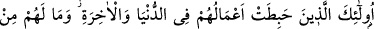
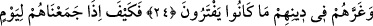

ÇABALARI BOŞA GİDENLER
21. Allah’ın âyetlerini inkâr edenler, haksız yere peygamberlerin canlarına
kıyanlar ve adâleti emreden insanları öldürenler (yok mu), onlara acı bir azabı
haber ver!
22. İşte bunlar dünyada da âhirette de çabaları boşa giden kimselerdir. Onların
hiçbir yardımcısı da yoktur.
23. (Rasûlüm!) Kendilerine Kitap’tan bir pay verilenleri (yahûdîleri) görmez
misin ki, aralarında hükmetmesi için Allah’ın Kitâb’ına çağırılıyorlar da, sonra
içlerinden bir gurup cayarak geri dönüyor.
24. Onların bu tutumları: Bize ateş, sadece sayılı günlerde dokunacaktır,
demelerinin bir sonucudur. Onların vaktiyle uydurdukları şeyler de dinleri hakkında
kendilerini yanıltmıştır.
25. Fakat, onları gelmesinde şüphe edilmeyen bir gün için topladığımız ve hiçbir
haksızlığa uğramaksızın herkese kazandığı şeylerin tastamam ödendiği zaman
halleri nice olur?
“Allah’ın âyetlerini inkâr edenler”; örtbas etmeye çalışanlar, İslâm’ın hak din
olduğunu bildiren hangi âyet olursa olsun inkâr eden herkestir.
“Peygamberleri haksız yere öldürenler” den maksat, ehl-i kitaptır. Öncekiler
Peygamberleri fiilen öldürmüşler, sonrakiler de onların yaptıklarına râzı olduklarından
öldürmüş gibi olmuşlardır. Ayrıca, Peygamberimiz (s.a.)’i ve mü’minleri de öldürmeye
teşebbüs etmişler; fakat Cenâb-ı Hak muhâfaza etmiştir. Hâdiseden, gelecek zaman
sîgasıyla bahsedilmesinin sebebi budur. Bakara sûresinde mârife olarak “biğayri’l-
hak” buyurulmuştur ki, “Allah’ın belirlediği ve izin verdiği bir hak olmaksızın